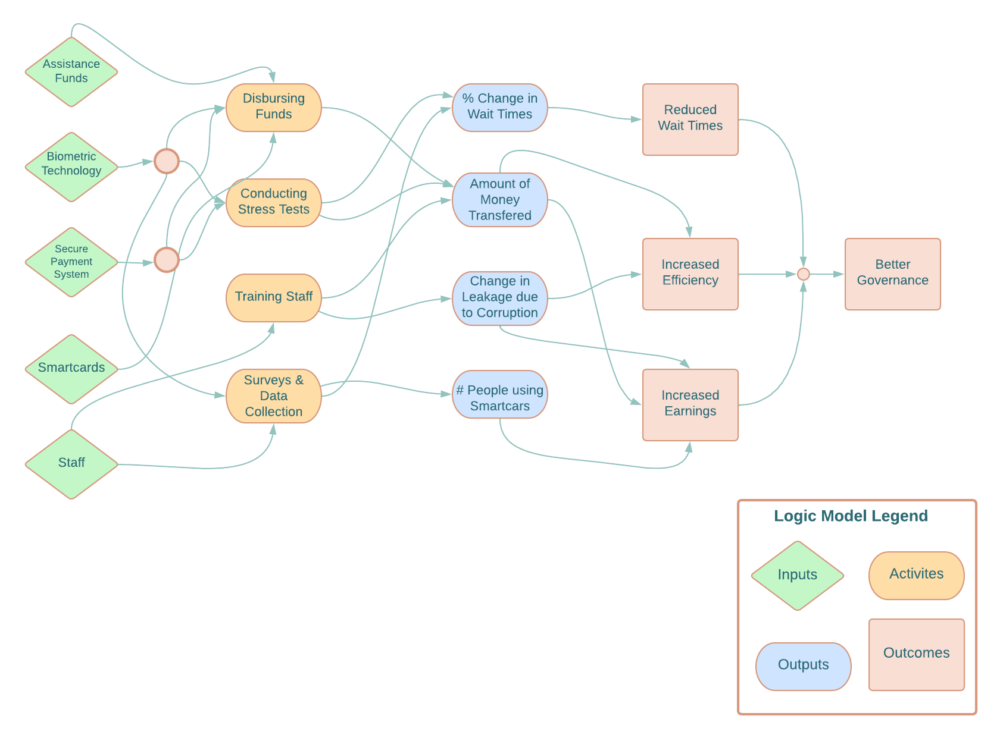

Program Theory
Program Theory and Impact Theory Graph
The program theory is that biometric authentication and secure payment systems can improve governance by reducing leakages in the delivery systems and reducing payment delays without adversely affecting program access.
The theory, based on previous research (World Bank 2003; Pritchett 2010, Reinikka and Svensson 2004; Programme Evaluation Organisation 2005; Niehaus and Sukhtankar 2013b) assumes that corruption and leakages are prevalent in government services in developing countries, leading to inefficiencies in assistance delivery systems. By implementing biometric authentication and secure payment systems, the government can ensure that the correct individuals receive the correct payments and services. The Smartcards intervention has a two-fold effect. First, it changes the institutions responsible for managing the funds by eliminating a few intermediaries and moves the point of payment closer to the recipient. Second, it introduces biometric authentication which facilities transparency in the system by providing a secure, tamperproof record of who has received services and payments. This can help to reduce corruption and increase accountability.
Similar to Muralidharan et al. 2016, we consider two main dimensions of impact: payment logistics, and leakages. We also consider multiple scenarios surrounding each dimension. First, the payment logistics could improve or worsen. It could naturally improve the system by moving the point of payment closer to the village, or the program could slow down the process due to technical problems like malfunctioning authentication devices or absence of technical staff. Improving payment logistics will affect the wait times of beneficiaries to access the funds. Secondly, the program could reduce or fail to reduce leakages. Theoretically, smartcards should reduce payments to ghost recipients and forbid officials to collect payments in the name of real beneficiaries as the beneficiaries must be present to pass the biometric test. But there could be technical loopholes in the payment architecture that could disprove the claim of an absolute secure system. Moreover, the assistance programs’ access could improve or suffer. In case of NREGS, local officers decide projects and generate employment. Eliminating opportunities to seek rent may disincentivize officials and they might reduce access. On the other hand, the NREGS funds would directly go towards to the development projects that were originally intended thus creating rural assets and generating more employment.

Logic model

- Inputs:
- Federal and state assistance funds: These funds are required to finance the implementation of the Smartcard intervention as well as NGREGS transfer payments.
- Biometric authentication technology: This technology is required to verify the identity of beneficiaries and ensure that payments are disbursed to the correct individuals.
- Banks: Banks are required to help manage the payment system and ensure that payments are securely and efficiently disbursed to beneficiaries.
- Secure payment systems: Secure payment systems are required to ensure that payments are not lost or stolen during the disbursement process.
- Smartcards: Smartcards are required to store the payment information of beneficiaries and facilitate the payment process.
- Technical staff: Trained staff are required to collect and manage beneficiary information, conduct stress tests, and implement the payment system effectively and efficiently.
- Survey support staff: Survey staff are required to conduct randomized promotion and conduct weekly surveys to collect information on variables of interest.
- Activities:
- Training staff for data collection and management of payment systems effectively and efficiently
- Collecting beneficiary personal and biometric information to verify individuals.
- Conducting stress tests on the digital payment system to ensure its smooth functioning.
- Implementation of secure payment systems to disburse payments to the correct individuals:
- Conducting door-to-door random promotions and provide information about the program.
- Conducting weekly surveys to collect data.
- Outputs:
- Number of people using Smartcard technology:
- Percentage change in average wait times at payment centers.
- Amount of money credited for every beneficiary and payment type.
- Amount of money saved: The amount of money saved is a measure of the program’s efficiency and cost-effectiveness.
- Change in leakages and corruption in the system:
- Outcomes:
- Reduced wait times: The Smartcard intervention is designed to reduce wait times at payment centers and payment delays which can save time and reduce the burden on beneficiaries.
- Increased earnings for the beneficiaries: The Smartcard intervention is designed to improve the delivery of funds for welfare programs, which can increase the earnings of beneficiaries.
- Increased efficiency: The Smartcard program will deliver reduce leakage, ensuring beneficiaries receive more funds in less time without allocating more budget to NREGS.
- Improved trust in government services: The Smartcard intervention is designed to improve the delivery of funds for welfare programs and ensure transparency in the payment system, which can improve trust in government.